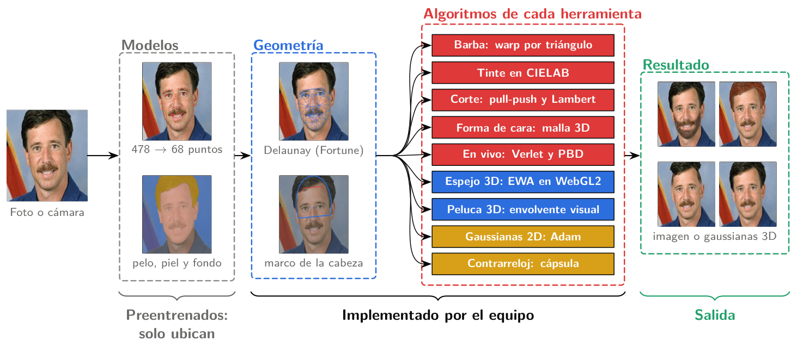
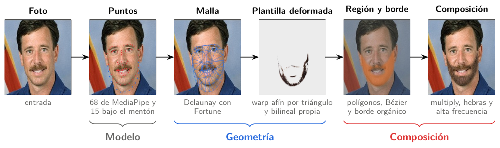
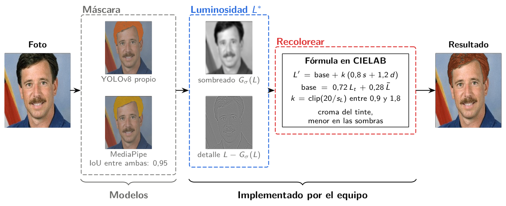
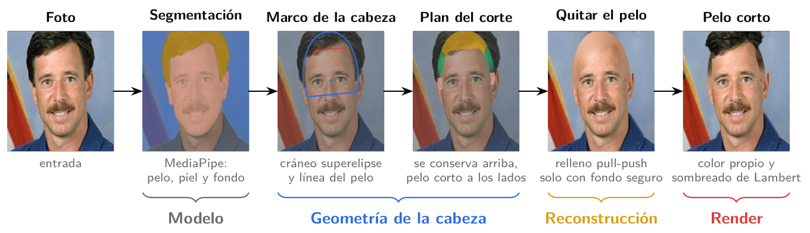
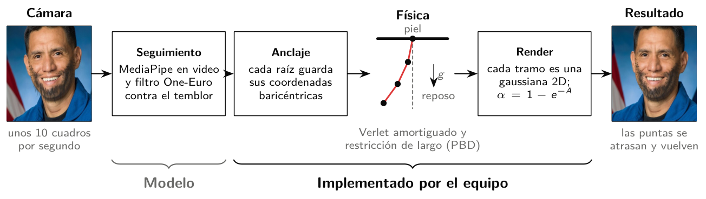
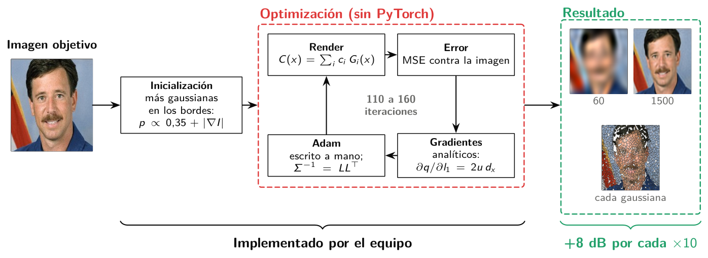
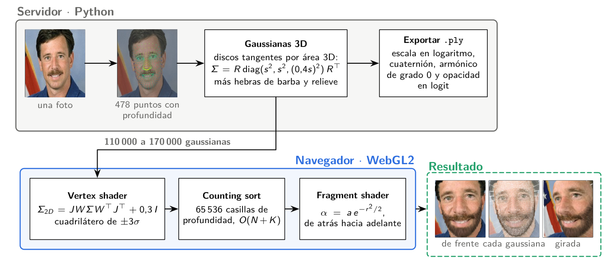
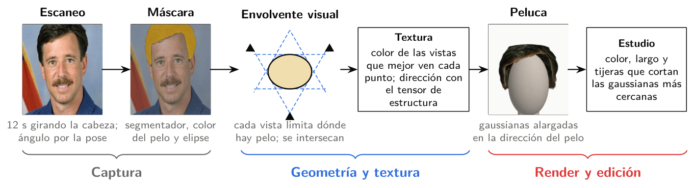
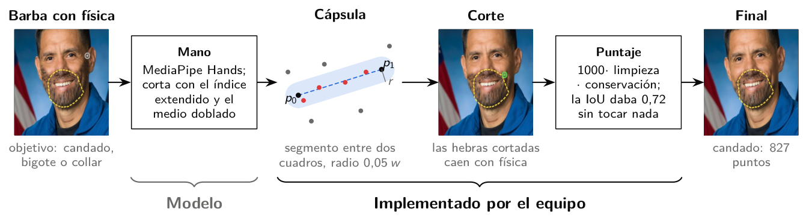
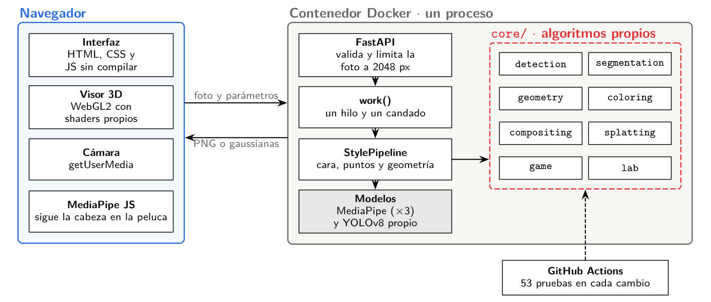

Barba, tinte y corte sobre tu foto. Súbela o tómala con la cámara: la app ubica 478 puntos de tu cara y dibuja el estilo encima en menos de un segundo.
Sale mejor con luz pareja, fondo liso y sin gorra.
Candado · generado en 0,37 s
Herramientas
Estilos
3D
Juegos
Guardados
Hecho por Kalos Lazo, Sofía Herrera y Gianpier Segovia para CS4016 Computación Gráfica, UTEC.
Tinte
Elige un color y la intensidad. Se aplica sobre el pelo y, si quieres, también sobre la barba.
Suelta tu foto aquí
o elige una desde tu equipo (JPG o PNG)
Barba
Elige un estilo y la densidad. La barba se ajusta a tu cara con una malla de triángulos.
Suelta tu foto aquí
o elige una desde tu equipo (JPG o PNG)
Corte
Ocho cortes sobre tu pelo real. En los degradados, el taper, el undercut y la raya, el pelo de arriba se mantiene.
Suelta tu foto aquí
o elige una desde tu equipo (JPG o PNG)
En vivo
Cada cuadro de la cámara se procesa en el servidor, así que va más lento que con una foto.
Cámara apagada
Elige un modo y enciéndela desde el panel.
Peluca 3D
Escanea tu peinado con la cámara y míralo en 3D sobre un maniquí o sobre tu cara.
Mis pelucas
Escaneos de esta sesión.
Arrastra la vista para girar la peluca.
Todavía no hay peluca 3D
Constrúyela desde tu escaneo o desde una foto de pelo.
Activa las tijeras y pinta sobre la peluca para cortar esa parte. Mantén Shift y arrastra para girar mientras cortas.
Espejo 3D
Arma tu cabeza en 3D con más de 100 000 gaussianas a partir de una sola foto. Arrastra para girarla y usa la rueda para acercarte.
Suelta tu foto aquí
o elige una desde tu equipo (JPG o PNG)
Laboratorio 3D
En prueba. Escanea tu cabeza desde varios ángulos y mira un avatar 3D que sigue tu cara. Arrastra la vista para verte de perfil.
Contrarreloj
Tienes 30 segundos para afeitar la barba hasta dejar el estilo objetivo. Corta apuntando con el índice frente a la cámara, o mantén presionado el mouse sobre la imagen.
Cámara apagada
Enciéndela, elige el objetivo y empieza la ronda.
Gaussianas
Tu foto rehecha con 20, 60, 200, 600 y 2000 gaussianas 2D. En modo adivinanza, detenlo apenas reconozcas la cara: con menos gaussianas ganas más puntos.
Suelta tu foto aquí
o elige una desde tu equipo (JPG o PNG)
Cómo funciona
Los modelos preentrenados solo ubican la cara, el pelo y la mano. La malla, el tinte, los cortes, la física y el 3D los calcula código del equipo. Cada diagrama muestra las etapas reales del programa sobre un retrato de dominio público de la NASA.
El recorrido de una foto

- Modelos. MediaPipe da 478 puntos de la cara, que pasan a los 68 estándar, y marca pelo, piel y fondo.
- Geometría. Con los puntos se arma una malla de Delaunay y un marco de la cabeza medido en anchos de cabeza.
- Herramientas. Cada una aplica su algoritmo sobre esa geometría.
- Resultado. Una imagen compuesta o, en el 3D, gaussianas que dibuja tu navegador.
Cada herramienta

- A los 68 puntos de la cara se suman 15 bajo la mandíbula, para que la barba bajo el mentón quede dentro de la malla.
- Una barba real se deforma triángulo por triángulo: afín inversa, prueba con coordenadas baricéntricas y lectura bilineal.
- Tres capas: multiply deja ver la luz de la piel, las hebras de Bézier dan volumen y la alta frecuencia trae los pelos reales.

- La máscara sale del YOLO del equipo o de MediaPipe; la app mide cuánto coinciden.
- En CIELAB la luminosidad se separa en sombreado y detalle: la base va hacia el tinte y los mechones se conservan.
- El croma baja en las sombras, como un pigmento real.

- El cráneo es una superelipse ajustada a la coronilla; la línea del pelo sale de la frente visible.
- Donde se quita pelo, el fondo se rellena con pull-push usando solo píxeles de fondo seguro.
- El pelo corto toma el color propio y se sombrea con Lambert, con la luz estimada de la cara.

- MediaPipe sigue la cara y el filtro One-Euro le quita el temblor.
- Cada hebra son cuatro partículas con la raíz anclada a la piel por coordenadas baricéntricas.
- Verlet mueve las partículas y una restricción de distancia (PBD) mantiene el largo.

- La foto se rehace como suma de N gaussianas con centro, color y forma.
- Gradientes analíticos y Adam escrito a mano, sin PyTorch.
- El PSNR sube unos 8 dB cada vez que se multiplica por 10 el número de gaussianas.

- En el servidor, la malla 3D se cubre con discos gaussianos tangentes, repartidos por área 3D.
- En el navegador, el vertex shader proyecta con EWA, un counting sort ordena de atrás hacia adelante y el fragment shader mezcla.
- La cabeza se exporta a .ply, el formato de 3D Gaussian Splatting.

- Cada captura guarda el ángulo de giro de la cabeza.
- En cada altura, cada vista limita dónde puede haber pelo; la intersección da la forma de la peluca.
- El color sale de las vistas que mejor ven cada punto y la dirección del pelo del tensor de estructura.

- El índice extendido con el dedo medio doblado es la máquina.
- A 10 cuadros por segundo el dedo salta: se cortan las hebras cerca del segmento entre dos cuadros.
- Puntaje: 1000 × limpieza × conservación.
Arquitectura

- Un solo proceso de FastAPI sirve esta interfaz y la API.
- Cada llamada al pipeline corre en un hilo aparte detrás de un candado, así el servidor sigue respondiendo mientras procesa.
- Cada técnica vive en su paquete de
backend/app/core/, y GitHub Actions corre 53 pruebas en cada cambio.
Qué se usa para cada cosa
| Parte | Técnica | Archivo en backend/app/core/ | Origen |
|---|---|---|---|
| Puntos de la cara | MediaPipe Face Landmarker; 478 → 68 puntos | detection/landmarks.py | Modelo |
| Pelo, piel y fondo | MediaPipe multiclase | segmentation/mp_segmenter.py | Modelo |
| Pelo para el tinte | YOLOv8n-seg con ajuste fino del equipo | segmentation/yolo_segmenter.py | Modelo |
| Punta del dedo | MediaPipe Hand Landmarker | detection/hands.py | Modelo |
| Malla | Delaunay con el barrido de Fortune | geometry/delaunay_fortune.py | Propio |
| Deformar plantillas | Afín por triángulo, baricéntricas, bilineal | geometry/warp.py | Propio |
| Barba | Multiply, hebras con Bézier, alta frecuencia | compositing/beard.py | Propio |
| Tinte | Luminosidad y color en CIELAB | coloring/dye.py | Propio |
| Tinte de barba | Textura y tensor de estructura | segmentation/facial_hair.py | Propio |
| Corte | Pull-push, cráneo superelipse, Lambert | compositing/haircut.py | Propio |
| Forma de cara | Medidas en la malla 3D y desviaciones z | geometry/face_shape.py | Propio |
| Física de barba | Verlet y restricciones de distancia (PBD) | compositing/beard_physics.py | Propio |
| Gaussianas 2D | Gradientes analíticos y Adam | splatting/gaussian_image.py | Propio |
| Espejo 3D | Proyección EWA, counting sort, WebGL2 | splatting/head3d.py · splat3d.js | Propio |
| Peluca 3D | Envolvente visual por cortes, textura multivista | splatting/hair3d.py | Propio |
| Contrarreloj | Cápsula entre dos cuadros y puntaje | game/speedrun.py | Propio |
El informe del proyecto explica cada algoritmo con sus fórmulas y decisiones. La lista de endpoints está en la documentación de la API.
Mis looks
Se guardan solo en este navegador. Toca una foto para ver el antes.
No hay looks guardados
Después de aplicar una barba, un tinte o un corte, toca «Guardar».